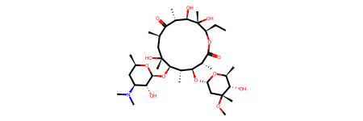
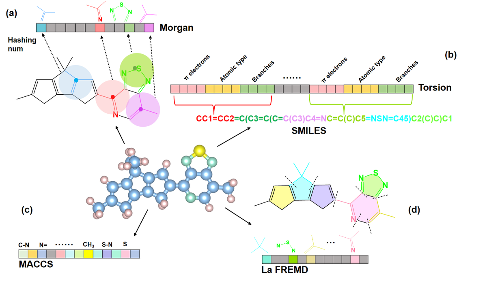
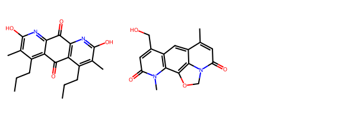
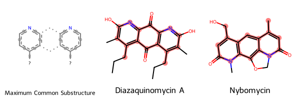

![]()
from rdkit import Chem, DataStructs
from rdkit.Chem import AllChem, rdFMCS, Draw
from rich import inspect
inchi_string="InChI=1S/C37H67NO13/c1-14-25-37(10,45)30(41)20(4)27(39)18(2)16-35(8,44)32(51-34-28(40)24(38(11)12)15-19(3)47-34)21(5)29(22(6)33(43)49-25)50-26-17-36(9,46-13)31(42)23(7)48-26/h18-26,28-32,34,40-42,44-45H,14-17H2,1-13H3/t18-,19-,20+,21+,22-,23+,24+,25-,26+,28-,29+,30-,31+,32-,34+,35-,36-,37-/m1/s1"
mol1 = Chem.MolFromInchi(inchi_string)Introduction
I recently reworked a portion of the SocialGene codebase to allow for easier addons/plugins. Inevitably, this also meant I needed to write additional code to accommodate chemistry into software that had primarily been genomics oriented. I won’t go into details here but chemicals from any source (e.g. NPAtlas, GNPS standards, etc.) are linked to a standardized notion of a molecule (i.e. the same molecule from two sources will link to a single “chemical” node). But I also wanted chemical similarity to be incorporated. After incorporating some basic chemical similarity measures I realized that some of the molecules I wanted to see linked as “similar” weren’t and that led me down a rabbit hole of similarity measures. Long story short, there’s might need to be at least two, Tanimoto and a semi-custom MCS similarity measure (at the bottom of this post). However, the second takes a long time to compute, so I decided to pump out this quick, very introductory post on calculating chemical similarity.
Vectors
To start, let’s read PubChem’s version of the InChI string for Erythromycin into Python using RDKit.
Let’s check to see if we now have an RDKit molecule object.
inspect(mol1)╭────────────── <class 'rdkit.Chem.rdchem.Mol'> ───────────────╮ │ The Molecule class. │ │ │ │ ╭──────────────────────────────────────────────────────────╮ │ │ │ <rdkit.Chem.rdchem.Mol object at 0x7fe211923d10> │ │ │ ╰──────────────────────────────────────────────────────────╯ │ │ │ │ 40 attribute(s) not shown. Run inspect(inspect) for options. │ ╰──────────────────────────────────────────────────────────────╯
Since this is being written in a Jupyter notebook, just declaring the molecule variable alone will generate a 2-D drawing of the molecule.
mol1
A lot (most?) methods to calculate chemical similarity don’t work on the molecule itself, but a vector representation of the molecule (“vector” = a 1-dimensional list of numbers (e.g. [1,2,3,4,5])). The length of the vector and the means by which numbers are assigned vary, but a common method is what’s called a “Morgan fingerprint”.
The figure below is from Caichao Ye, Xinyue Zhang, Genwang Wei et al. Data-based Polymer-Unit Fingerprint (PUFp): A Newly Accessible Expression of Polymer Organic Semiconductors for Machine Learning, 20 July 2022, https://doi.org/10.21203/rs.3.rs-1813671/v1 and depicts several methods for creating these vectors (the chained boxes, where each square is a number in the vector, also called a “bit”)

So, lets take a look at the Morgan fingerprint for our erythromycin molecule. There are two variables for creating the Morgan fingerprint. Radius basically looks n-bonds away from an atom. nBits sets the length of the vector.
mol1_morgan_fingerprint = AllChem.GetMorganFingerprintAsBitVect(
mol1, useChirality=True, radius=2, nBits=2084, bitInfo={}
)mol1_morgan_fingerprint<rdkit.DataStructs.cDataStructs.ExplicitBitVect at 0x7fe2119214d0>The vector itself:
mol1_morgan_fingerprint.ToBitString()'00000000000000000000000000000000000000000100000000000000000000000010000000000000000000000000000000000000000010000000000000010000000000010000000000000000010000000000000000000000000000000000000000000000000000000000000000000000000000000000000010000000000000000000000000000000000000000000000000010000000000000000000000000001000000000000000000000000000000000000010000000000000000000000000000000010000010000000000000101000000000000000000000000000000000000100000000000000000000000010000000000000000000001000000000000001000000000000000000000000000001000000000000000000010000100000000000000000000000000000001000000000000000000000000000000000000000000000000000001000000000100000000000000000000000000000000000000000000000000000000000000000000000000000000000000000000000000100000000000010000000000000000000000000010000000000000000000000000000000000000100000000000000000000000000000010000000000000000000000000000000000000000000000000000000000000000000000000000000000000001000000000000000000000000000000000100000000000000000000000000000000010000000000000000000010000000000001001000000000000000000000000000000000000000000000000000000000000000000000000000000000000001000000000000010000000110000000000000000000000000000000000000000000000000000000000000000000000000000000000000000000000000000000000000000000000000000000001000000000000010000000000000000000000100000000000000000000000000000000000000000000000100000001000000000000000000000000000100000010000000000000001000000100000000000000000000010000000000000000000000000000000000000000000000000000000000000000000001000000001000000000000000001000000000000000000000000000000000000000000000000000000000001010000000000000100000000000010000000000000000001000010000000000000000000000000000000100000000000000000000000000000000000000000000000000000000000000000000000000000000000000000000000000000000000000000000010000000000000000101000000000000000000000000000000000100000000000000010000000000000000000000000000000000000000010000000000100000000000000100000000000000000000010010000000000000000000000000000000000000000010000001100000000000000000000000000000000000'The vector should contain 2048 numbers.
mol1_morgan_fingerprint.GetNumBits()2084How many 1’s are in the vector?
mol1_morgan_fingerprint.GetNumOnBits()72How many 0’s are in the vector?
mol1_morgan_fingerprint.GetNumOffBits()2012Calculate similarity
Just like with fingerprint/vector generation, there are a lot of different methods to measure similarity between chemical vectors. For simplicity I’m just going to use RDKit’s Tanimoto score.
And, obviously, if we calculate the similarity between the same vector we should get the best score possible which, for Tanimoto, is 1. (Tanimoto scores range between 0 and 1)
DataStructs.TanimotoSimilarity(mol1_morgan_fingerprint, mol1_morgan_fingerprint)1.0Beyond Tanimoto
There’s pros and cons to both vector and similarity method choices. As an example, two molecules I’ve been using to test things on the genetics side of Socialgene are Diazaquinomycin A and Nybomycin.
We can load the chemical structures for these into Python by using RDKit to parse InCHI strings that represent each molecule. I pulled the below InCHI strings from https://pubchem.ncbi.nlm.nih.gov
diazaquinomycin_a_inchi = "InChI=1S/C20H22N2O4/c1-5-7-11-9(3)19(25)21-15-13(11)17(23)14-12(8-6-2)10(4)20(26)22-16(14)18(15)24/h5-8H2,1-4H3,(H,21,25)(H,22,26)"
nybomycin_inchi = "InChI=1S/C16H14N2O4/c1-8-3-13(21)18-7-22-16-14-11(5-10(8)15(16)18)9(6-19)4-12(20)17(14)2/h3-5,19H,6-7H2,1-2H3"diazaquinomycin_a_mol = Chem.MolFromInchi(diazaquinomycin_a_inchi)
nybomycin__mol = Chem.MolFromInchi(nybomycin_inchi)Draw.MolsToGridImage([diazaquinomycin_a_mol, nybomycin__mol])
def morgan_fingerprint(rdkitmol, radius=2, nBits=1024):
return AllChem.GetMorganFingerprintAsBitVect(
rdkitmol, useChirality=True, radius=radius, nBits=nBits, bitInfo={}
)diazaquinomycin_a_morgan_fingerprint = morgan_fingerprint(diazaquinomycin_a_mol)
nybomycin_morgan_fingerprint = morgan_fingerprint(nybomycin__mol)These two molecules, show Tanimoto/Dice similarities of 0.12 and 0.22. But, while definitely different, they share common biosynthetic and structural elements and I wanted a score that could supplement other general scores to highlight that they share a decent portion of their scaffold.
DataStructs.TanimotoSimilarity(diazaquinomycin_a_morgan_fingerprint, nybomycin_morgan_fingerprint)0.12903225806451613DataStructs.DiceSimilarity(diazaquinomycin_a_morgan_fingerprint, nybomycin_morgan_fingerprint)0.22857142857142856Maximum Common Substructure (MCS) similarity
The code in the next block uses RDKit to find the maximum common substructure between the two molecules. I highly recommend teachopencadd for a good explainer on MCS as well as other tutorials on computational chemistry.
molecules = [diazaquinomycin_a_mol, nybomycin__mol]
mcs_result = rdFMCS.FindMCS(molecules, ringMatchesRingOnly = True, completeRingsOnly=True)
mcs_smarts = mcs_result.smartsString
mcs_mol = Chem.MolFromSmarts(mcs_result.smartsString)
smarts_and_mols = [mcs_mol] + molecules
legends = ["Maximum Common Substructure", "Diazaquinomycin A", "Nybomycin"]
matches = [""] + [mol.GetSubstructMatch(mcs_mol) for mol in molecules]Visually it looks like MCS is picking up on the structural similarities I wanted it to…
drawing = Draw.MolsToGridImage(smarts_and_mols, highlightAtomLists=matches, legends=legends)
drawing
And we can calculate the Tanimoto similarity formula as applied to the shared vs unshared atoms of the two molecules and their maximum common substructure.
mcs_result.numAtoms / (diazaquinomycin_a_mol.GetNumAtoms() + nybomycin__mol.GetNumAtoms() - mcs_result.numAtoms)0.5Wrapping that into a single Python function:
def mcs_similarity(mol1, mol2, threshold=0.3):
res = rdFMCS.FindMCS((mol1, mol2), timeout=5, ringMatchesRingOnly = True, completeRingsOnly=True)
mcs_tani = res.numAtoms / (mol1.GetNumAtoms() + mol2.GetNumAtoms() - res.numAtoms)
if mcs_tani >= threshold:
return mcs_tanimcs_similarity(diazaquinomycin_a_mol, nybomycin__mol)0.5Caveat
As of writing this post, NPAtlas contains ~30,000 molecules. Using RDKit’s “bulk” versions of calculating Tanimoto similarity, an all-vs-all similarity takes a few minutes, running in parallel on a 12-core processor (24 logical cores). However, MCS is a lot slower of a calculation. To calculate this MCS similarity on NPatlas required substantial time on CHTC, UW-Madison’s Center for High Throughput Computing. Enough time for me to write this post, and more. MCS has a number of settings and it’s not clear yet if the ones I have chosen are adequate or best for what I was hoping to achieve.
Reuse
Citation
For attribution, please cite this work as:
Clark, Chase M. 2024. “Chemical Similarity with Python and
RDKit.” March 12, 2024. https://code4np.github.io/posts/chemsim_2024_02_28.